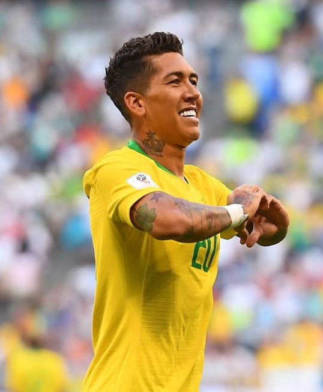
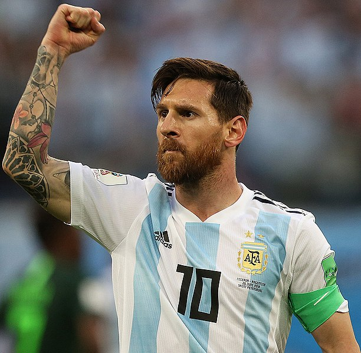
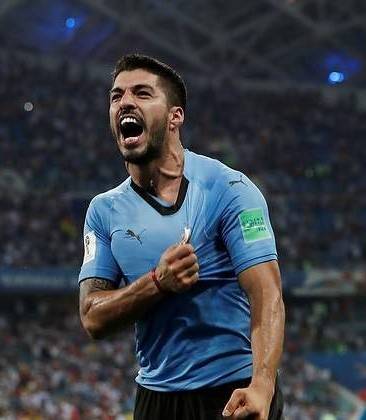

Roberto Firmino
Juega como mediapunta, delantero
centro o mediocampista ofensivo y
su equipo actual es el
Liverpool Football Club de la Premier League.

Lionel Messi
Juega como delantero o
centrocampista. Ha desarrollado toda
su carrera en el FC Barcelona de
España y en
la selección argentina, de la que
es capitán.

Luis Suárez Díaz
Juega como delantero en el Fútbol Club Barcelona.
Es internacional absoluto con la selección de fútbol de Uruguay,
de la cual es el máximo goleador histórico.